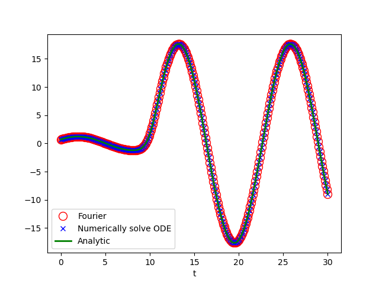
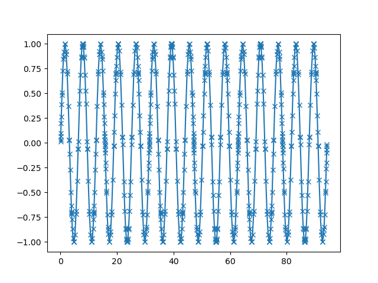

model
$$\begin{align} \ddot{x} = - \omega^2 x + F(t) \end{align}$$In Landau's book, the solution(non-resoance) is
$$\begin{align} \xi(t) = e^{\mathrm{i}\omega t} \int_0^t \mathrm{d}t' \cdot F(t') e^{-\mathrm{i}\omega t'} \end{align}$$ $$\begin{align} x(t) = A \sin(\omega t) + B \cos(\omega t) + \frac{\mathrm{Im}[\xi(t)]}{\omega} \end{align}$$where
$$\begin{align} B =& x(t) \\ A =& \frac{1}{\omega} \left( \dot{x}(0) - \frac{\dot{\xi}(0)}{\omega} \right) \end{align}$$solve by Fourier transform
For
$$\begin{align} F(t) = f_{\gamma} \cos(\gamma t) \end{align}$$it is easy get
$$\begin{align} x_{\gamma}(t) = A \cos(\omega t + \phi) + \frac{f_{\gamma}}{\omega^2 - \gamma^2} \cos(\gamma t) \end{align}$$Similar for
$$\begin{align} F(t) = f_{\gamma} \sin(\gamma t) \end{align}$$For non-resonance case, it is easy get
$$\begin{align} x_{\gamma}(t) = A \cos(\omega t + \phi) + \frac{f_{\gamma}}{\omega^2 - \gamma^2} \sin(\gamma t) \end{align}$$So, for
$$\begin{align} F(t) = \frac{1}{\sqrt{2\pi}} \int_{-\infty}^{\infty} \tilde{F}(\gamma) e^{\mathrm{i}\gamma t} \mathrm{d}\gamma \end{align}$$where
$$\begin{align} \tilde{F}(\gamma) = \frac{1}{\sqrt{2\pi}} \int_{-\infty}^{\infty} F(t) e^{-\mathrm{i}(\gamma + \mathrm{i} 0^+) t} \mathrm{d}t \end{align}$$(where $\mathrm{i}0^{ + }$ is for the Fourier transforms such as sine function) we have
$$\begin{align} x(t) = A \cos(\omega t + \phi) + x_1(t) \end{align}$$where
$$\begin{align} x_1(t) = \mathcal{P}\frac{1}{\sqrt{2\pi}}\int_{-\infty}^{\infty} \mathrm{d}\gamma\cdot \frac{\tilde{F}(\gamma)}{\omega^2 - \gamma} e^{ \mathrm{i}\gamma t} \end{align}$$becasue we only consider the non-resoance case, the principal value $\mathcal{P}$ is added. We can use the identity(Sokhotski–Plemelj theorem)
$$\begin{align} \int_0^{\infty} \mathrm{d} s\cdot e^{- \mathrm{i}(\omega + \mathrm{i}0^+) s} = \frac{1}{\mathrm{i}(\omega + \mathrm{i}0^+)} = \pi\delta(\omega) - \mathrm{i}\mathcal{P} \frac{1}{\omega} \end{align}$$get a more physical form
$$\begin{align} x_1(t) =& \frac{1}{\sqrt{2\pi}} \mathcal{P}\int_{-\infty}^{\infty} \mathrm{d}\gamma\cdot \frac{1}{2\omega}\left[ \frac{1}{\omega - \gamma} + \frac{1}{\omega + \gamma} \right] \tilde{F}(\gamma) e^{ \mathrm{i}\gamma t} \\ =& \frac{1}{2\omega} (-1) \mathrm{Im} \left\{ \int_0^{\infty} \mathrm{d}s \cdot e^{- \mathrm{i}(\omega + \mathrm{i}0^+) s} \left[ F(t + s) + F(t - s) \right] \right\} \end{align}$$We also add $\mathrm{i}0^+$ here for a possible $\lim_{t\to\infty}F(t)\neq 0$, such as $F(t) = \sin(t)$ . We can also substract a homogeous solution from it to get the solution in Landau's book
$$\begin{align} x_1(t) + \frac{1}{2\omega} \mathrm{Im} \left\{ e^{\mathrm{i}\omega t} \left[ \int_0^{\infty} e^{- \mathrm{i}(\omega + \mathrm{i} 0^+) s} F(s)\mathrm{d}s - \int_{-\infty}^0 e^{- \mathrm{i}(\omega + \mathrm{i} 0^+) s} F(s)\mathrm{d}s \right] \right\} = \frac{\mathrm{Im}[\xi(t)]}{\omega} \end{align}$$All these are check by the following numerical code
code
import numpy as np
import matplotlib.pyplot as plt
from scipy.integrate import odeint
from scipy.integrate import quad
def quad_c(func, *args, **kwargs):
re = quad(lambda x: func(x).real, *args, **kwargs)
im = quad(lambda x: func(x).imag, *args, **kwargs)
return re[0]+1j*im[0], re[1]+1j*im[1]
def ftrans(func, x):
res = quad_c(func, 0, np.inf, weight='cos', wvar=x)[0]
res += 1j*quad(func, 0, np.inf, weight='sin', wvar=x)[0]
res += quad(func, -np.inf, 0, weight='cos', wvar=x)[0]
res += 1j*quad(func, -np.inf, 0, weight='sin', wvar=x)[0]
return res/np.sqrt(2*np.pi)
class Oscillator:
def __init__(self, w, Ft, x0, v0):
"""
dx^2/dt^2 + w^2 = Ft
w: oemga
Ft: function of t
x0: intial position
v0: intial dx/dt, volecity
"""
self.w = w
self.Ft = Ft
self.x0 = x0
self.v0 = v0
def dX_dt(self, X, t):
return [X[1], -self.w**2*X[0] + self.Ft(t)]
def xi_im_landau(self, t):
"""
Imaginary part of Landau (22.10) with out xi_0
"""
xil = - quad(self.Ft, 0, t,
weight='sin', wvar=self.w)[0] * np.cos(self.w*t)
xil += quad(self.Ft, 0, t,
weight='cos', wvar=self.w)[0] * np.sin(self.w*t)
return xil
def X_t_ana(self, t, ts):
xt = self.xi_im_landau(t) / self.w
xt += np.cos(self.w*t) * self.x0
dxi_dt0 = self.xi_im_landau(ts[1]) - self.xi_im_landau(ts[0])
dxi_dt0 /= ts[1] - ts[0]
xt += np.sin(self.w*t) * (self.v0 - dxi_dt0/self.w) / self.w
return xt
def X_t_ana_FT(self, t):
xt = quad(lambda s: (self.Ft(t+s) + self.Ft(t-s)), 0, np.inf,
weight='sin', wvar=self.w)[0]
xt /= (2*self.w)
cor = np.sin(self.w*t) * quad(self.Ft, 0, np.inf,
weight='cos', wvar=self.w)[0]
cor -= np.cos(self.w*t) * quad(self.Ft, 0, np.inf,
weight='sin', wvar=self.w)[0]
cor -= np.sin(self.w*t) * quad(self.Ft, -np.inf, 0,
weight='cos', wvar=self.w)[0]
cor += np.cos(self.w*t) * quad(self.Ft, -np.inf, 0, weight='sin',
wvar=self.w)[0]
xt += cor/(2*self.w)
xt += np.cos(self.w*t) * self.x0
dxi_dt0 = self.xi_im_landau(ts[1]) - self.xi_im_landau(ts[0])
dxi_dt0 /= ts[1] - ts[0]
xt += np.sin(self.w*t) * (self.v0 - dxi_dt0/self.w) / self.w
return xt
def Xt_ode(self, ts):
Xs = odeint(self.dX_dt, [self.x0, self.v0], ts)
return Xs
osc = Oscillator(w=.5, Ft=lambda t: 5*np.exp(-(t-10)**2), x0=.7, v0=.5)
ts = np.linspace(0, 30, 300)
plt.plot(ts, [osc.X_t_ana_FT(ti) for ti in ts], 'ro', mfc='None', ms=10,
label='Fourier')
plt.plot(ts, osc.Xt_ode(ts)[:, 0], 'bx', label="Numerically solve ODE")
plt.plot(ts, [osc.X_t_ana(ti, ts) for ti in ts], 'g', label='Analytic', lw=2)
plt.xlabel('t')
plt.legend()
plt.savefig('osc.png', transparent=True)
plt.show()
Caution
scipy.integrate.quad method gives a wrong result when use weight and
infinity integral range. The following integral are not converge, but the code
give a result without waring or error. Why? if I have time, ...
import numpy as np
import matplotlib.pyplot as plt
from scipy.integrate import quad
def quad_recorded(func, *args, **kwargs):
"""
use scipy.integrate.quad, but return the results with additional
information "nc" and "vc"
Returns:
inte_res: the return of scipy.integrate.quad
nc: the points calculated
vc: the calculated functiona values
"""
def func_recorded(x, node_container, value_container):
res = func(x)
node_container.append(x)
value_container.append(res)
return res
nc = []
vc = []
inte_res = quad(lambda x: func_recorded(x, node_container=nc,
value_container=vc),
*args, **kwargs)
idx = np.argsort(np.array(nc))
nc = np.array(nc)[idx].tolist()
vc = np.array(vc)[idx].tolist()
return inte_res, nc, vc
r, nc, vc = quad_recorded(np.sin, 0, np.inf, weight='sin', wvar=0.2)
plt.plot(nc, vc, '-x')
plt.savefig('caution.png', transparent=True)
print(r) >>> (2.4313884239290928e-14, 2.0748702051907655e-10)
Reference
- Mechanics, Third Edition: Volume 1 (Course of Theoretical Physics)
- Wikipedia: Sokhotski–Plemelj theorem